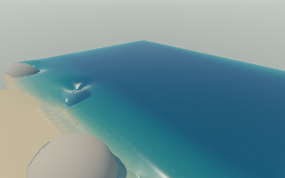

Flow-kernel packing, persistent-foam surface sampling and visual rain contacts now share one water upload and a bounded horizontal index. Their maps remain on the GPU. The live WebGPU/native scene enables this path; QA → Optimizations → “Share GPU flow / foam / rain inputs” returns to the exact CPU reference. WebGL and historical scene modules retain their paths.
Two busy-scene pairs improved pooled full-window throughput by 4.1%: 6.138 → 6.388 FPS and .818× → .852× realtime. The rain pair improved 2.1%; calm throughput was effectively flat. This is a modest, workload-dependent gain—not removal of the full CPU water mirror.
AMD Radeon Pro 560X / GCN-4, Metal, Deno 2.9.8. Shared live beach, CPU/Wasm bulk physics and GPU rendering/fine particles. 640 × 400 native viewport, fixed 320 × 200 rendering, resolution 1.4, 3,024 water markers. Presentation remains capped at 60 FPS; normal earned-step scheduling and one outstanding frame are unchanged. Each successful run has 96 frames; discard 16, then measure 79 actual presented intervals. Busy: wind 12, organic foam and 144 grab/place edits resulting in eight parcels. Rain adds rate 600. Calm: no wind, organic foam or rain. Runs were sequential. No background benchmark ran concurrently.
| Workload | Path | Runs | FPS | Simulation / wall |
|---|---|---|---|---|
| busy | reference | 2 | 6.138 | 0.818× |
| busy | shared | 2 | 6.388 | 0.852× |
| rain | reference | 1 | 5.460 | 0.728× |
| rain | shared | 1 | 5.578 | 0.744× |
| calm | reference | 1 | 6.677 | 0.890× |
| calm | shared | 1 | 6.673 | 0.890× |
Wall time and simulation progress are measured across complete frames. CPU function timers below include nested work and must not be summed. Native GPU timestamps were unavailable on this adapter/runtime; render-completion spans include waiting and presentation and are not shader costs.
| Raw run | FPS | Realtime | p95 interval (ms) | Interval SD (ms) | Frames |
|---|---|---|---|---|---|
| busy-reference-profile.json | 6.094 | 0.813× | 186.1 | 10.8 | 96 |
| busy-reference-repeat1.json | 6.183 | 0.824× | 187.0 | 10.2 | 96 |
| busy-shared-final.json | excluded / validation only | — | — | — | 27 |
| busy-shared-repeat2.json | 6.371 | 0.849× | 175.6 | 9.7 | 96 |
| busy-shared-trial1.json | 6.405 | 0.854× | 179.1 | 11.2 | 96 |
| calm-reference-final.json | 6.677 | 0.890× | 171.5 | 10.2 | 96 |
| calm-shared-final.json | 6.673 | 0.890× | 175.8 | 11.5 | 96 |
| rain-reference-pair1.json | 5.460 | 0.728× | 202.0 | 11.2 | 96 |
| rain-shared-offscreen.json | excluded / validation only | — | — | — | 32 |
| rain-shared-pair1.json | 5.578 | 0.744× | 201.6 | 12.4 | 96 |
A later full-window candidate run stopped at frame 27 with the existing Invalid Surface Status acquisition failure, also recorded in the November 10 baseline. It is excluded; no replacement window stress run was launched. The native report calls any renderer failure “contextLost”; this trace is a presentation error, not a reported device-lost or shader-compile error. Final offscreen checks passed. This pass does not resolve native window lifecycle reliability or prove crash-free long sessions. Failure log.
| CPU work, inclusive mean | Reference | Shared inputs | Cadence |
|---|---|---|---|
| Publish visual water state, busy repeat | 21.93 ms | 17.22 ms | per publication |
| Foam surface preparation, busy repeat | 5.28 ms | 2.72 ms | per update; exact CPU terrain heights retained |
| Flow field preparation/reconstruction submission | 1.84 ms | 1.19 ms | per update |
| Visual rain contact heights, rain pair | 1.11 ms | .20 ms | per update |
| Field deposition/preparation, busy repeat | 10.51 ms | 10.56 ms | per physics step, unchanged |
| Field transfer/surface/transport, busy repeat | 12.99 ms | 12.92 ms | per physics step; includes scalar work, unchanged |
| Pressure solve, busy repeat | 3.73 ms | 3.73 ms | per physics step, unchanged |
| Consumer | Current ownership after this change |
|---|---|
| Fine-water flow inputs | GPU packs the original covariance Gaussian kernels from the shared snapshot. The existing flow reconstruction draw is unchanged. |
| Persistent foam | GPU top-layer height, velocity, chemistry, activity, obstacle mask and source focusing; existing transport and drawing. CPU terrain height refresh follows geometry revisions. |
| Falling-rain water contacts | GPU height image. Object contact handling, rain mass and condensation rules remain exact existing features. |
| Optical water field | Still separate: smoothed support, shore images, detached families and visual compression are different from the flow field. Combining them would change appearance. |
| Bodies, player, wetting, tools, rain mass, field coupling | Still consume current CPU arrays. No stale or reduced feedback was substituted. |
| Connected GPU physics | Its full CPU mirror/readback is still required. This change uploads a coherent snapshot; it does not yet bind the authoritative connected-state buffer directly. |
The measured CPU physics route has no GPU physics readback to remove. Removing the connected-route mirror is a separate next stage. New fixed GPU resources total about 5.23 MiB (49.82 → 55.05 MiB initial tracked rendering allocation); no map readback in normal shared-input updates. Maximum 32,768 markers, 256 bodies, 65,536 index cells, and eight million conservative candidate visits across the two foam gathers and rain gather. More crowded/larger/invalid inputs or conflicting queued snapshots use the original reference path. Sequential bounded compilation, the allocation cap and frame guards remain. Later reference runs retain the allocated but disabled resources for matched startup.
Eleven CPU/GPU cases cover calm/wind, held water, sparse neighbors, clean water, body obstacles, shoreline, empty state, reset and missing/partial optional arrays. Maximum flow-kernel error 5.72e-8; foam/surface velocity error below 6.43e-5; rain heights match exactly. Ninety-one relevant unit/numerical tests pass. Both builds pass (existing large-chunk warning only). GPU oracle · Tests · Web build · Native build.
Twelve frozen full-scene views: beach, carved sand and all object materials, explicitly visible foam/grains/fine particles, camera sweep, underwater, night, sky and larger reset. Worst mean RGB difference is below 9.5e-12; maximum single-channel difference 1.20e-7. No nonfinite pixels. This is frozen-state parity plus bounded playback, not proof of long-term trajectory identity. Image metrics.

The main measured CPU targets remain field deposition/preparation and transfer/transport, followed by optical grouping and rain physics. Profile their sub-stages before changing solvers. The eventual resident boundary must also move geometry/body/wetting feedback and publish compact results; deleting the mirror now would break those features. Native presentation acquisition remains a separate stability priority. Windows/RTX, browser performance and long/high-resolution sessions remain unmeasured for this change.
npm run build:native .native/tools/deno run --config native/deno.json --allow-read --allow-write=.native --allow-env --allow-sys --allow-ffi native/water-consumers-numeric.js .native/tools/deno run --config native/deno.json --allow-read --allow-write=.native --allow-env --allow-sys --allow-ffi native/water-consumers-check.js # One GPU process at a time. Each full-window benchmark exits at 96 frames. # Choose reference/shared and calm/busy/rain: .native/tools/deno run --config native/deno.json --allow-read --allow-write=.native --allow-env --allow-sys --allow-ffi native/water-handoff-bench.js shared busy sample # Use tag offscreen for 32-frame validation without window presentation.